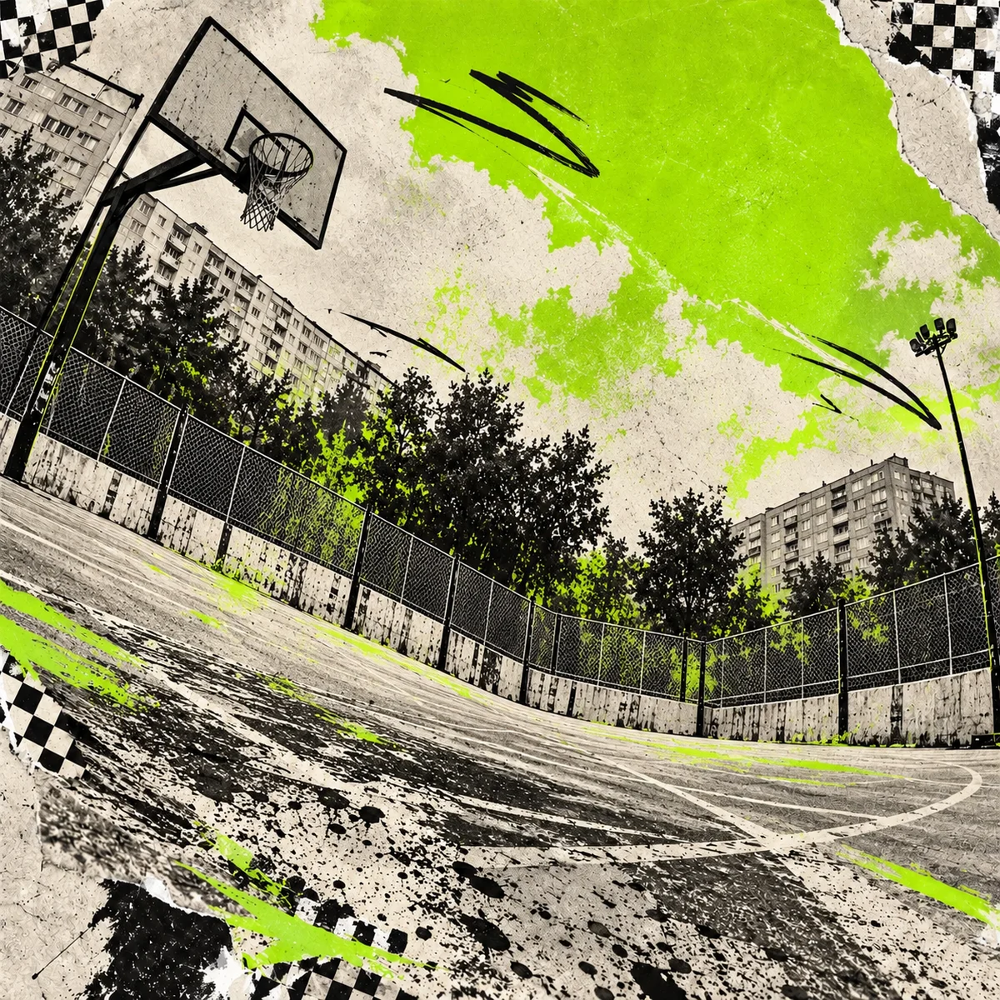
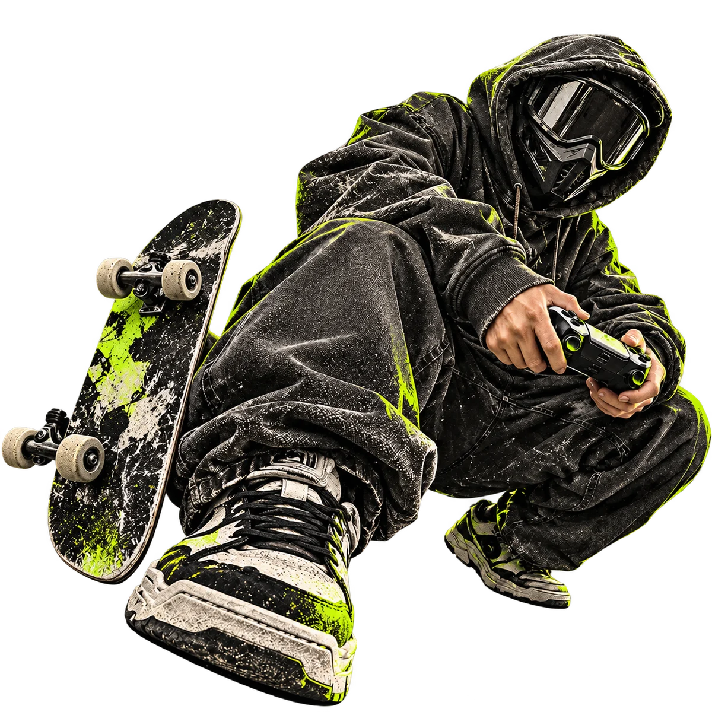

ВЫХОДИИЗ ЛОББИ.
Катка закончилась. Движ только начинается.
Игры, улица и люди на твоей волне.


Подвигай стикеры. Пальцем или стрелками.
ТВОЙ РАНГ
НЕ РЕШАЕТ.
Решает, с кем ты проводишь время. Собираем место для тех, кому одинаково близки хороший кооп, шумная улица и странные идеи.
Познакомиться с ДВОРОМ ↗
ОДНА ТИМА.
РАЗНЫЕ КАРТЫ.
Сегодня кооп. Завтра скейт. Послезавтра делаем постер к собственному движу. Можно быть новичком во всём.
ВЫБЕРИ
СВОЮ КАРТУ.
В игре, на площадке или за новым постером. Здесь есть место твоему интересу.

НАЙДИ СВОЮ ТИМУ.
Кооп, инди и кастомки. Можно без опыта и высокого ранга. Главное, чтобы вместе было интересно.
Посмотреть кооп ↗ПЛАНЫ НА ПОТОМ.
Идеи первых встреч. Даты и места появятся после запуска клуба.
ОнлайнЕЩЁ ОДНУ?
Кооп без потных требованийУлицаАСФАЛЬТ SESSION
Доска, площадка, новые знакомыеСмотреть все движи ↗Никаких вступительных экзаменов.